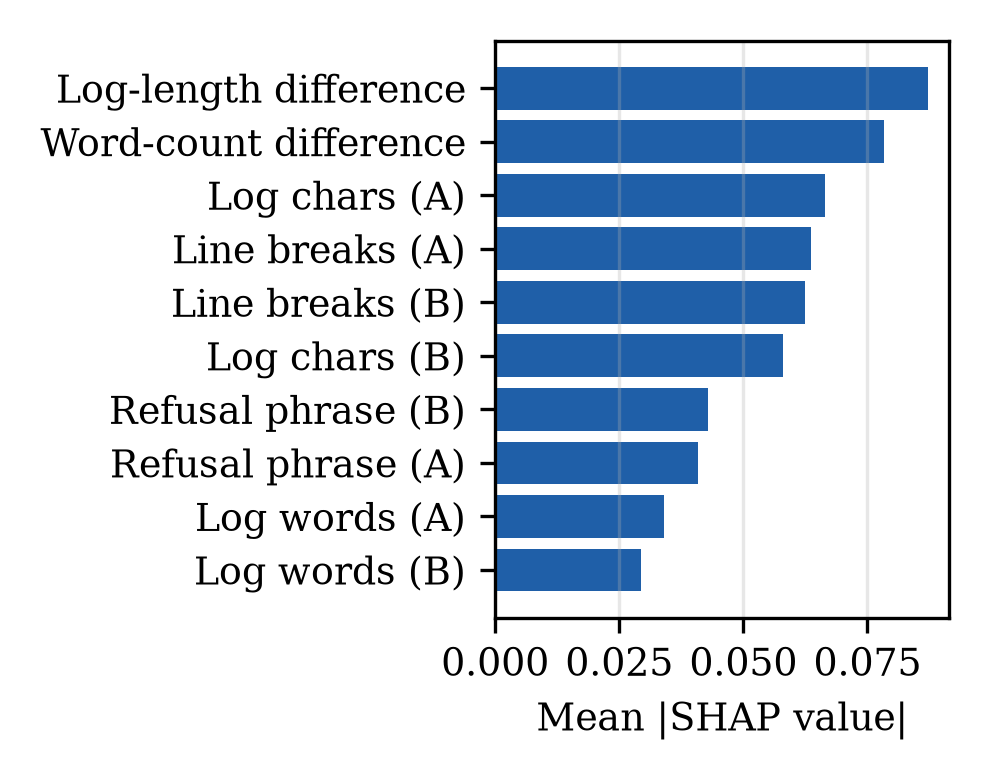
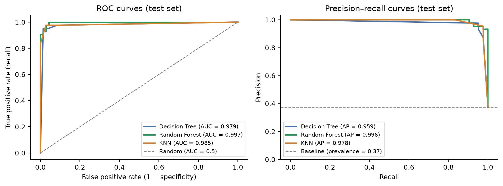

Huzeifa Asif · Data Science & Machine Learning
Huzeifa Asif.
Software engineer → machine learning & data science
I build data tools that real businesses use every day, and I now bring the same care to machine learning: from a style-aware transformer that predicts which chatbot answer people prefer, to clinical classifiers tuned for the cost of a missed diagnosis, to Spark pipelines for supply-chain risk.
- Software EngineerZahrh Esther Hardware Trading, remote
- Research paperSA-DeBERTa · 57,215 chatbot battles
- Software in daily useUAE and Pakistan
- In progressSupply-chain risk with PySpark
What I work on
NLP & human–AI interaction
Transformers that model how people judge AI answers, and what that says about interface design.
Machine learning
Leakage-free evaluation, calibrated probabilities and decisions driven by the real cost of errors.
Big data
Distributed pipelines with PySpark and MLlib for supply-chain and predictive-maintenance problems.
Software that ships
Desktop and mobile apps with offline mode, tests and real users who depend on them.
Predicting what people prefer
Which chatbot answer will people prefer? A style-aware transformer on Chatbot Arena data
SA-DeBERTa reads a prompt and two LLM answers together and fuses them with 16 interpretable style features. Trained on 57,215 real user votes between 64 models, it beats every baseline, and SHAP analysis shows that answer length is the strongest driver of what people prefer.
Data science & machine learning

Chatbot preference prediction
A DeBERTa cross-encoder with style features, swap augmentation and a calibrated ensemble.
48.4% accuracy · 64.4% on clear winners

Breast cancer diagnosis: DT vs RF vs KNN
Leakage-free tuning, validation curves and a decision threshold chosen by the cost of a missed cancer.
97.4% accuracy · 41 of 42 cancers found
Student outcomes: ID3 by hand and in code
Every entropy and information gain derived by hand, then verified with a from-scratch ID3. Try the tree yourself.
9 / 9 hand-computed gains verified
Supply chain delay prediction
Predicting late deliveries at order time on the DataCo dataset, with a leakage audit and Spark MLlib pipelines.
Aircraft engine failure prediction
Predicting the remaining useful life of turbofan engines from multivariate sensor time series (NASA C-MAPSS).
Software people use every day
Built for my father's trading company, my family's restaurant and plant nurseries across Pakistan.
Cheque Management System
Write, print and track supplier cheques across office PCs, with offline mode, roles, backups and a full change log.
Pakistan Plants billing
Bilingual English/Urdu billing for nurseries: 280+ plants, credit tracking and WhatsApp-ready PDF invoices.
DimSum POS
Offline-first restaurant point-of-sale with kitchen tickets, thermal receipts and shift cash reconciliation.
EyeQ
Final-year project: eye tracking with computer vision to measure quiz difficulty, tested with 20 students.
Experience & education
- Nov 2026Research paper: SA-DeBERTaChatbot preference prediction, Advanced HCI
- Oct 2026Cheque Management System goes liveZahrh Esther Hardware Trading, Sharjah
- Mar 2025 – nowSoftware Engineer (remote)Zahrh Esther Hardware Trading LLC, UAE
- 3-month internshipData Science InternTab Solutions, Lahore
- 2021 – 2025BSc Computer ScienceBahria University, Lahore · Academic Excellence Certificate
What I work with
Machine learning & NLP
Data
Software
Tools
Let's talk
Open to data science and machine learning internships, research collaborations and graduate opportunities.
Built with Quarto and Python. Every chart on the project pages is computed from that project's own result files when the site is built.
Back to top